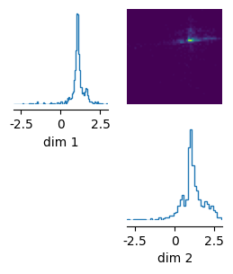

More flexibility over the training loop and samplers¶
Note, you can find the original version of this notebook at tutorials/18_training_interface.ipynb in the sbi repository.
In the previous tutorials, we showed how sbi can be used to train neural networks and sample from the posterior. If you are an sbi power-user, then you might want more control over individual stages of this process. For example, you might want to write a custom training loop or more flexibility over the samplers that are used. In this tutorial, we will explain how you can achieve this.
import torch
from torch import ones, eye
from torch.optim import Adam, AdamW
from sbi.utils import BoxUniform
from sbi.analysis import pairplot
from typing import Callable
As in the previous tutorials, we first define the prior and simulator and use them to generate simulated data:
prior = BoxUniform(-3 * ones((2,)), 3 * ones((2,)))
def simulator(theta):
return theta + torch.randn_like(theta) * 0.1
num_simulations = 2000
theta = prior.sample((num_simulations,))
x = simulator(theta)
Below, we will first describe how you can run Neural Posterior Estimation (NPE). We will attach code snippets for Neural Likelihood Estimation (NLE) and Neural Ratio Estimation (NRE) at the end.
Neural Posterior Estimation¶
First, we have to decide on what DensityEstimator to use. In this tutorial, we will use a Neural Spline Flow (NSF) taken from the nflows package.
from sbi.neural_nets.net_builders import build_nsf
density_estimator = build_nsf(theta, x)
Every density_estimator in sbi implements at least two methods: .sample() and .loss(). Their input and output shapes are:
density_estimator.loss(input, condition):
Args:
input: `(batch_dim, *event_shape_input)`
condition: `(batch_dim, *event_shape_condition)`
Returns:
Loss of shape `(batch_dim,)`
density_estimator.sample(sample_shape, condition):
Args:
sample_shape: Tuple of ints which indicates the desired number of samples.
condition: `(batch_dim, *event_shape_condition)`
Returns:
Samples of shape `(sample_shape, batch_dim, *event_shape_input)`
Some DensityEstimators, such as Normalizing flows, also allow to evaluate the log probability. In those cases, the DensityEstimator also has the following method:
density_estimator.log_prob(input, condition):
Args:
input: `(sample_dim, batch_dim, *event_shape_input)`
condition: `(batch_dim, *event_shape_condition)`
Returns:
Loss of shape `(sample_dim, batch_dim,)`
Training the density estimator¶
We can now write our own custom training loop to train the above-generated DensityEstimator:
opt = Adam(list(density_estimator.parameters()), lr=5e-4)
for _ in range(200):
opt.zero_grad()
losses = density_estimator.loss(theta, condition=x)
loss = torch.mean(losses)
loss.backward()
opt.step()
Given this trained density_estimator, we can already generate samples from the posterior given observations (but we have to adhere to the shape specifications of the DensityEstimator explained above:
x_o = torch.as_tensor([[1.0, 1.0]])
print(f"Shape of x_o: {x_o.shape} # Must have a batch dimension")
samples = density_estimator.sample((1000,), condition=x_o).detach()
print(f"Shape of samples: {samples.shape} # Samples are returned with a batch dimension.")
samples = samples.squeeze(dim=1)
print(f"Shape of samples: {samples.shape} # Removed batch dimension.")
Shape of x_o: torch.Size([1, 2]) # Must have a batch dimension
Shape of samples: torch.Size([1000, 1, 2]) # Samples are returned with a batch dimension.
Shape of samples: torch.Size([1000, 2]) # Removed batch dimension.
pairplot(samples, limits=[[-3, 3], [-3, 3]], figsize=(3, 3));

Wrapping as a DirectPosterior¶
You can also wrap the DensityEstimator as a DirectPosterior. The DirectPosterior is also returned by inference.build_posterior and you have already learned how to use it in the introduction tutorial and the amortization tutotrial. It adds the following functionality over the raw DensityEstimator:
- automatically reject samples outside of the prior bounds
- compute the Maximum-a-posteriori (MAP) estimate
from sbi.inference.posteriors import DirectPosterior
posterior = DirectPosterior(density_estimator, prior)
print(f"Shape of x_o: {x_o.shape}")
samples = posterior.sample((1000,), x=x_o)
print(f"Shape of samples: {samples.shape}")
Shape of x_o: torch.Size([1, 2])
Shape of samples: torch.Size([1000, 2])
Note: For the DirectPosterior, the batch dimension is optional, i.e., it is possible to sample for multiple observations simultaneously. Use .sample_batch in that case.
_ = pairplot(samples, limits=[[-3, 3], [-3, 3]], figsize=(3, 3), upper="contour")

Custom Data Loaders¶
One helpful advantage of having access to the training loop is that you can now use your own DataLoaders during training of the density estimator. In this fashion, larger datasets can be used as input to sbi where x is potentially an image or something else. While this will require embedding the input data, a more fine grained control over loading the data is possible and allows to manage the memory requirement during training.
First, we build a Dataset that complies with the torch.util.data.Dataset API. Note, the class below is meant for illustration purposes. In practice, this class can also read the data from disk etc.
class NPEData(torch.utils.data.Dataset):
def __init__(self,
num_samples: int,
prior: torch.distributions.Distribution,
simulator: Callable,
seed: int = 44):
super().__init__()
torch.random.manual_seed(seed) #will set the seed device wide
self.prior = prior
self.simulator = simulator
self.theta = prior.sample((num_samples,))
self.x = simulator(self.theta)
def __len__(self):
return self.theta.shape[0]
def __getitem__(self, index:int):
return self.theta[index,...], self.x[index,...]
We can now proceed to create a DataLoader and conduct our training loop as illustrated above.
train_data = NPEData(num_samples=2048, prior=prior, simulator=simulator)
train_loader = torch.utils.data.DataLoader(train_data, batch_size=128)
For sake of demonstration, let’s create another estimator using a masked autoregressive flow (maf). For this, we create a second dataset and use only parts of the data to construct the maf estimator.
from sbi.neural_nets.net_builders import build_maf
dummy_data = NPEData(64, prior, simulator, seed=43)
dummy_loader = torch.utils.data.DataLoader(dummy_data, batch_size=4)
dummy_theta, dummy_x = next(iter(dummy_loader))
maf_estimator = build_maf(dummy_theta, dummy_x)
optw = AdamW(list(maf_estimator.parameters()), lr=5e-4)
num_epochs = 100
for ep in range(num_epochs):
for idx, (theta_batch, x_batch) in enumerate(train_loader):
optw.zero_grad()
losses = maf_estimator.loss(theta_batch, condition=x_batch)
loss = torch.mean(losses)
loss.backward()
optw.step()
if ep % 10 == 0:
print("last loss", loss.item())
last loss 4.49238920211792
last loss -1.2831010818481445
last loss -1.5764970779418945
last loss -1.6195335388183594
last loss -1.6439297199249268
last loss -1.6492975950241089
last loss -1.6488871574401855
last loss -1.6473512649536133
last loss -1.6515816450119019
last loss -1.6809775829315186
# let's compare the trained estimator to the NSF from above
samples = maf_estimator.sample((1000,), condition=x_o).detach()
print(f"Shape of samples: {samples.shape} # Samples are returned with a batch dimension.")
samples = samples.squeeze(dim=1)
print(f"Shape of samples: {samples.shape} # Removed batch dimension.")
Shape of samples: torch.Size([1000, 1, 2]) # Samples are returned with a batch dimension.
Shape of samples: torch.Size([1000, 2]) # Removed batch dimension.
_ = pairplot(samples, limits=[[-3, 3], [-3, 3]], figsize=(3, 3))

Neural Likelihood Estimation¶
The workflow for Neural Likelihood Estimation is very similar. Unlike for NPE, we have to sample with MCMC (or variational inference) though, so we will build an MCMCPosterior after training:
from sbi.inference.posteriors import MCMCPosterior
from sbi.inference.potentials import likelihood_estimator_based_potential
# Note that the order of x and theta are reversed in comparison to NPE.
density_estimator = build_nsf(x, theta)
# Training loop.
opt = Adam(list(density_estimator.parameters()), lr=5e-4)
for _ in range(200):
opt.zero_grad()
losses = density_estimator.loss(x, condition=theta)
loss = torch.mean(losses)
loss.backward()
opt.step()
# Build the posterior.
potential, tf = likelihood_estimator_based_potential(density_estimator, prior, x_o)
posterior = MCMCPosterior(
potential,
proposal=prior,
theta_transform=tf,
num_chains=50,
thin=1,
method="slice_np_vectorized"
)
samples = posterior.sample((1000,), x=x_o)
pairplot(samples, limits=[[-3, 3], [-3, 3]], figsize=(3, 3), upper="contour");

Neural Ratio Estimation¶
Finally, for NRE, at this point, you have to implement the loss function yourself:
from sbi.neural_nets.net_builders import build_resnet_classifier
from sbi.inference.potentials import ratio_estimator_based_potential
from sbi import utils as utils
net = build_resnet_classifier(x, theta)
opt = Adam(list(net.parameters()), lr=5e-4)
def classifier_logits(net, theta, x, num_atoms):
batch_size = theta.shape[0]
repeated_x = utils.repeat_rows(x, num_atoms)
probs = ones(batch_size, batch_size) * (1 - eye(batch_size)) / (batch_size - 1)
choices = torch.multinomial(probs, num_samples=num_atoms - 1, replacement=False)
contrasting_theta = theta[choices]
atomic_theta = torch.cat((theta[:, None, :], contrasting_theta), dim=1).reshape(
batch_size * num_atoms, -1
)
return net(atomic_theta, repeated_x)
num_atoms = 10
for _ in range(300):
opt.zero_grad()
batch_size = theta.shape[0]
logits = classifier_logits(net, theta, x, num_atoms=num_atoms)
logits = logits.reshape(batch_size, num_atoms)
log_probs = logits[:, 0] - torch.logsumexp(logits, dim=-1)
loss = -torch.mean(log_probs)
loss.backward()
opt.step()
potential, tf = ratio_estimator_based_potential(net, prior, x_o)
posterior = MCMCPosterior(
potential,
proposal=prior,
theta_transform=tf,
num_chains=100,
method="slice_np_vectorized"
)
samples = posterior.sample((1000,), x=x_o)
pairplot(samples, limits=[[-3, 3], [-3, 3]], figsize=(3, 3));